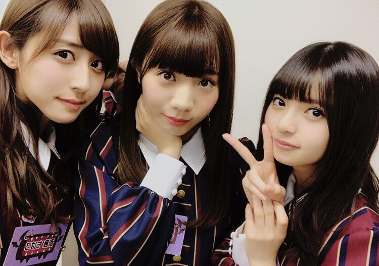
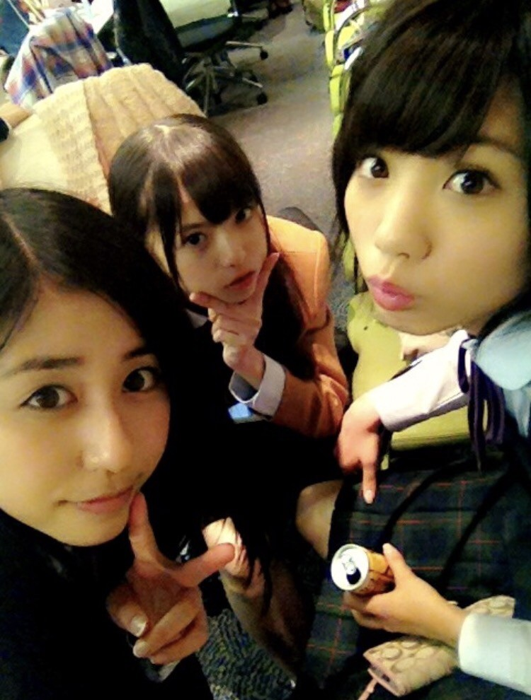

| 2016/12 06 Tue | 斎藤ちはる ちーむN。 |
ちはるーむへようこそ！
昨日のNOGIBINGO!7、見くださいましたか？
飛鳥が私と愛未に「ありがとう」を
わざわざ伝えてくれました(﹡ˆ ˆ﹡)
愛未と私は、飛鳥といるのが楽しいから
誘ってたのにまさか感謝されるとは
思ってなかったのでビックリした！！
m(_ _)m
こちらこそ仲良くしてくれてありがとう！
飛鳥が1人好きなのは知ってるけど(笑)、
たまには私たちとご飯行こうね( ´ ▽ ` )
と言ったら、行きたい！行こう！と
言ってくれました◎
「ちーむN」
(Nは能條のN。他にはなかったのかよ！笑
という名前の私たち。)
(若気の至り)
でまたご飯行ったら報告します\( ˆ ˆ )/

収録後の私たち。

4年前の私たち。
愛未は完全ショートだし、
飛鳥は幼くてアイドルアイドルしてるし、
私は男だし。(←!?!?!?)
全然違うな〜
成長しました(﹡ˆ ˆ﹡)
----------------------------------♡
ついに明日から
Merry Xmas Show
、アンダー単独公演
が始まります！！
そして私から一つお願いがあります◎
"曲中のコールですが、
「ちーちゃん」ではなく、
『ちはる』に統一でお願いしたいです！！"
今までどっちがいいかな〜と
凄い悩んでしまって曖昧だったのですが、
きいと一緒にライブに出ると
「きいちゃん」と「ちーちゃん」が
聞き分けづらくなってしまったので、
「ちはる」に統一させていただきました！
今回、きいとは別ですが
統一したいのでお願いしますm(_ _)m♪
あと、ライブ中のコールや声援は
恥じらわずに大きめの声だとよく聞こえるので
メンバーは嬉しくなります◎
皆さんの声が聞きたい〜(﹡ˆ ˆ﹡)
そしてちはるーむめいとの皆さんは
赤×青のペンライトを忘れずに♪
タオルもあれば更に見つけやすくなります♪
ライブ楽しみ...♡
素敵なライブにしますのでお楽しみに！
そして来れない方の為に、
明日も沢山写真撮ってブログ載せるので
お楽しみに！
--------------------------------♡
♬ ChihaMusic
「天体観測」BUMP OF CHICKENさん
ライブ前に聞くとテンションが上がって
頑張ろうという気になれる曲。
この曲は、中学生の時の持久走のときに
かかっていたので、力が湧いてくるのは
その思い出もあるからなのかな。
ずっとこの曲で走ってました！
持久走は苦手だったけど
この曲だったから頑張れた！
"始めようか天体観測
二分後に君が来なくとも
「イマ」というほうき星
君と二人追いかけている"
望遠鏡を担ぐ理由が全て違くて
その一つ一つに感動する。
青春や葛藤や成長や色々なことを
この歌詞から感じ取れる。
今日はChihAnswerお休みしてしまって
すみませんでしたm(_ _)m
また来週募集するので
その時まで考えていてください！！
おやすみ〜
斎藤ちはる